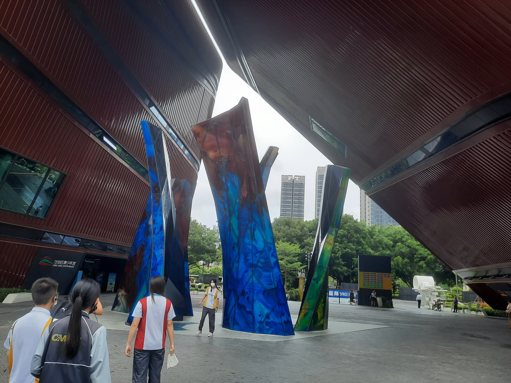

龍崗區科技館

龍崗區科技館共設定了科學之基、工業之興、科創之路、生命之謎、寰宇之夢五大通齡展區，並依據龍崗區人口結構特設定了情景化的小童科學探索為主題的Idea樂園，並配置了居里小屋、牛頓課堂、哈雷課堂、九章庭等公共教室，及時提供各類親子科普、科普課堂、科普秀等公教活動。B1層的寰宇之夢展區，核心展項有"宇宙大爆炸假説"、"走進空間站"、"返回艙"。亮點展項有"太陽系"、"四軸平衡器"、"月亮跳"。在這裏你可以遇見各種科幻奧祕，探索未知領域的樂趣。3F層設有科創之路展區，核心展項有"能源天地"、"X-lab"、"機器人脱口秀"等。亮點展項有"計算機"、"機器人樂隊"、"畫像機器人"等。這裏就像是未來星球，所有的智能機器人，在這裡有條不紊的工作着，它們的智能科技代替了人類的體力勞動。

國家超級計算深圳中心
国家超级计算深圳中心（深圳云计算中心）系深圳市人民政府批准成立的企业化管理事业单位，属国家863计划、广东省和深圳市重大项目。